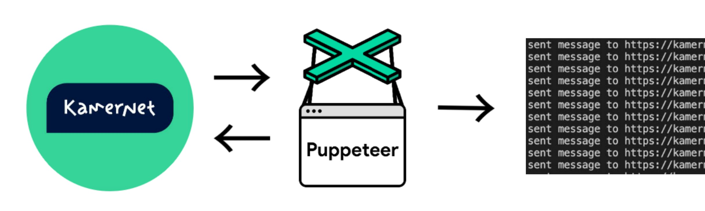

Kamernet Puppeteer
Dutch universities do not provide accommodation, but help international students in their search. They provide services like SSH, funda, Pararius, ROOM, ect.
Kamernet is one of these platforms. When I began using it, I quickly understood that it is very competetive, and it's not me who chooses a home, but a home (landlord) chooses me. Many landlord have said that they are looking for a Dutch student, or that they need people now, or they say that somebody replied earlier.
Sending out messages by hand was a difficult and time consuming task. So, the most obvious solution was make a bot message to every home and hope that I get to a viewing.
Solution
Kamernet Puppeteer is such a bot, it uses Puppeteer (duh.) to automate the process of sending out messages. It turned on every 5 minutes to check if there are any new adverts and this way I would be one of the first to respond.
Results
I was invited to a few homes, but the deals would not work out. However, through it, I met my future best friend, who helped me to get a room at their house :)